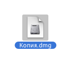
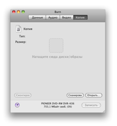
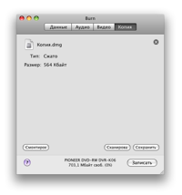
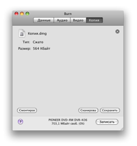

Копирование дисков:
Burn
может работать с образами дисков. Это файлы, представляющие диск. Вы
также можете скопировать готовый диск.
Заметьте: не могут быть скопированы многосессионные диски, за
исключением аудио-CD (но это будет не точная копия).
В Panther можно записать только образы cdr, toast, iso и наиболее
простые cue/bin. Другие образы требуется смонтировать и бросить в
список.
1 Выберите диск (образ):
Выберите образ диска или диск, который Вы хотите записать.

2 Бросьте образ или диск в окно программы
Бросьте образ диска (dmg, img, toast, iso, cdr, dvdr,
cue/bin и TOC) или диск в главное окно Burn.
 

3 Щелкните «Записать»
Будет открыта диалоговая панель.

4 Выберите параметры
Выберите параметры сессии. Дополнительные настройки можно найти в окне
«Настройки», доступном через меню Burn.

5 Запишите диск
Снова щелкните «Записать», чтобы начать процесс записи.

6 Burn
произведет запись диска
В процессе записи Burn будет показывать ее ход в информационной
панели.